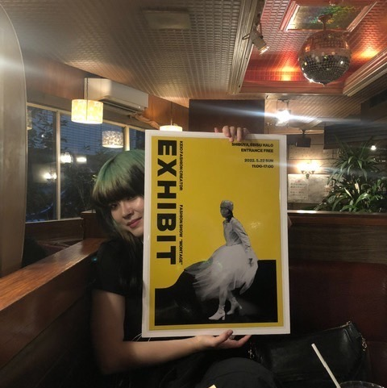

-
 代表
代表立教大学 3年
中村汐里
Keio Fashion Creatorは年に一つのファッションショーを創る学生服飾団体です。
当団体は20年部員達が築いてきた社会との繋がりや、一人一人のクリエーションにかける想いの強さ、多種多様な部員たちが織りなす色彩の豊かさが強みです。またそれら故に、学生でありながら実現できる活動の規模の大きさも特徴です。
当団体の好きな所はどこかと問われた時、私は“部員“とお答えします。日々考え、学び、模索しながらアップデートを続ける部員たちと取り組む時間は学びの連続であり、刺激的です。また、互いを尊重する暖かさを部員達から感じられるところも当団体の魅力であり、代わりの利かない大切な場所です。
今年も部員達とKeio Fashion Creatorのファッションショーをお届けできることを幸せに思います。私達の想いが皆様へ、そして社会へと伝わっていくことを目指し、心を込めて活動してまいります。 -

デザイナーチーフ
文化学園大学 3年
今井耶衣
デザイナーの主な活動内容は毎年年末に行われているファッションショーの衣装を作る事です。制作するにあたって、世界各地に点在するフランス発祥の服飾専門学校「ESMOD JAPON」と連携し、基礎から服作りを学びます。
毎週土曜日、ESMODの講師二名にデザインやパターン、縫製などを一から学びながら作業を行なっています。「選ぶ、着る」という楽しみ方から「想像する、制作する」といった楽しみ方に広がった楽しみ方を体験していただけるやりがいのある役職だと私は思っています。
テーマから連想する解釈をデザインに落とし込みモデルに至るまで自分の納得がいくまで追求した作品が完成した時の喜びや達成感は何物にも代え難いものであり、学生生活の中で確実に印象深いものになると思います。 -

ディレクターチーフ
立教大学 3年
浅野凛々子
ディレクターはデザイナーのつくった服たちが誰かの目に届くまでの全てを演出します。具体的にデザインやフォトグラフィの技術や知識はもちろん求められますが、最も必要なものは思考し続ける力と質を妥協しない貪欲さだと私は考えます。
記憶に残る一瞬の情景や香りのように、ファッションショーはたった１５分というはかないものです。その限られた時間の中で、社会あるいは自分自身について何かを感じてもらうために、ディレクターは表現を模索します。
学生団体が収益をとらずに発信していく意味は何か。私たち学生にしかできないクリエイションによって、新しい世代の意思がたくさんの誰かに伝わることを信じています。 -

プレスチーフ
東京家政大学 3年
関日真里
プレスは、Keio Fashion Creatorの広報を担う部署です。主に企業様や他団体との商談、企画の立案・交渉、SNSの運用などの活動を行っています。
地味な活動が多いと思われがちなプレスですが、プレス部員の活躍が数々の企業様との繋がりを築き、当団体の飛躍の一翼を担っていると言えます。
Keio Fashion Creatorの更なる飛躍のため、またプレス部員にとって1年間の活動がこれから先の力になるべく、今年度も様々な活動に精力的に取り組んでまいります。 -

モデルマネージャーチーフ
学習院女子大学 3年
石田柚葉
モデルマネージャーはその名の通りモデルの手配から連絡等、マネージメント全般を行う役職です。モデルハントが主な仕事ではありますが、それに付随して外部の方との交流も多く、事務的な作業も重要な業務となります。またショー当日にはバックヤードの統括を担います。
当団体ではデザイナー部員が服を製作しますが、ひとりひとりの想いが込められた服はモデルが着用しランウェイを歩いたときに初めて、ひとつのルックとして観客の目に映ります。どのモデルがどんな服を着るのかによって見え方や印象が決まるため、表現したいルックの姿を実現できるモデルを集めることが大切です。
そして人間はトルソーとは違い、各々異なるスタイルやカラーを持ちます。それぞれのモデルが持つオーラと、今年度産み出される服のデザインや内包される感情を上手く融合させることで、 ファッションショーにおける楽しみ方を広げられれば嬉しいです。